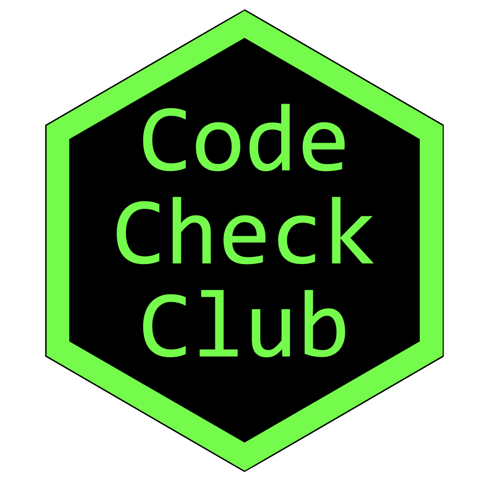

Code Check Club

This document will record our pilot of a code check club. The first step is to identify some possible code to be checked. Ideally for the first few, this will be:
- in a language most of the members know
- straightforward analyses
- not too long
- the coder or a person very familiar with the code will attend
Examples
Docherty_2020
Docherty C, Lee A, Hahn AC, DeBruine LM & Jones BC (2020). Do more attractive women show stronger preferences for male facial masculinity? Evolution and Human Behavior, 41(4): 312-317. doi: 10.1016/J.EVOLHUMBEHAV.2020.05.005
Abstract
Researchers have suggested that more attractive women will show stronger preferences for masculine men because such women are better placed to offset the potential costs of choosing a masculine mate. However, evidence for correlations between measures of women’s own attractiveness and preferences for masculine men is mixed. Moreover, the samples used to test this hypothesis are typically relatively small. Consequently, we conducted two large-scale studies that investigated possible associations between women’s preferences for facial masculinity and their own attractiveness as assessed from third-party ratings of their facial attractiveness (Study 1, N = 454, laboratory study) and self-rated attractiveness (Study 2, N = 8972, online study). Own attractiveness was positively correlated with preferences for masculine men in Study 2 (self-rated attractiveness), but not Study 1 (third-party ratings of facial attractiveness). This pattern of results is consistent with the proposal that women’s beliefs about their own attractiveness, rather than their physical condition per se, underpins attractiveness-contingent masculinity preferences.
Data/Code
Data/code: https://osf.io/36fs5/
Coding language: R
Analysis type: mixed effects models
Contact: Lisa DeBruine
Study 1 files:
- PV2003-Replication-06.01.20.pdf
- PV2003 Replication 06.01.20.Rmd
- OCMATE_facepref_ANON.csv
- OCMATE_attr_ANON.csv
Study 2 files:
- Women’s SRA and fem_pref Ciaran MSc.csv
- Ciaran_analysis_AJL.Rmd
- Ciaran_analysis_AJL.pdf